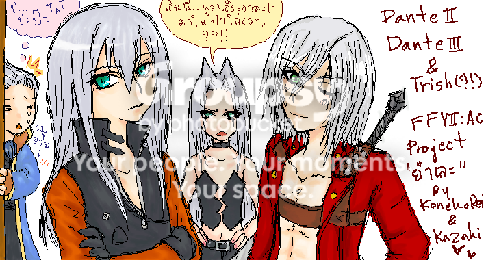

ช่วยสอนวิธีเอารูปมโพสหน่อย จะได้ไหมอ่ะก๊าบ
จะเปนพระคุณอย่างสูง
http://eco.froztic.in.th/archive/ecofanclub/
กระทู้ [FC]~FanArt Collection~ วาดได้ตามใจฉัน
http://eco.froztic.in.th/archive/ecofanclub/viewtopic.php?f=21&t=1294
หน้า 11 จากทั้งหมด 143
[alisa]_FF เขียน:ช่วยสอนวิธีเอารูปมโพสหน่อย จะได้ไหมอ่ะก๊าบ
จะเปนพระคุณอย่างสูง
ก็หาที่ฝากรูป เช่นเว็บ http://www.imageshack.us แล้วก็ก๊อปแอดแดสของภาพมาใส่โดยเอาเครื่องหมาย [img] กับ [ /img] ครอบแอดเดรสไว้
[alisa]_FF เขียน:ช่วยสอนวิธีเอารูปโพสหน่อย จะได้ไหมอ่ะก๊าบ
จะเปนพระคุณอย่างสูง
มันก็มีกระทู้สอนไม่ใช่เหรอครับ ของคุณKornitอ่ะ - -
ปล. ซิกใหญ่ไป แก้ด้วย - -
รอดูรูปGuro~~~
*ออฟคุงวาดซาโตโกะในบทเฉลยของแฝดเปล่าน่ะ^ ^(ในฮิงุราชิอ้ะ~~ ฉากโดนตรึง+เฉาะๆๆ โอร้ว~ มันสปอยสำหรับคนที่อ่านมังงะไม่ได้ดูอนิเมนะ=w=')
*ออฟคุงวาดซาโตโกะในบทเฉลยของแฝดเปล่าน่ะ^ ^(ในฮิงุราชิอ้ะ~~ ฉากโดนตรึง+เฉาะๆๆ โอร้ว~ มันสปอยสำหรับคนที่อ่านมังงะไม่ได้ดูอนิเมนะ=w=')
ตอนนี้ข้าน้อยกำลังเค้นพลังทั้งหมดและรวบรวมสมาธิโดยนั่งสมาธิใต้น้ำตก เพื่อให้นึกภาพตัวการ์ตูนน่ารักๆให้ออก
ข้าน้อยจะลองเปลี่ยนสายวิชามาเป็นสายน่ารักดู คงคิดว่า จะสำเร็จวิชาอวตาร ภายใน 1 เดือนนี้ ท่านจอมยุทธโปรดรอ-*- O[]O!! 1เดือน หรือไม่ก็รอตอนเปิดเทอม เพราะข้าน้อยจะได้กล้องดิจิตอล ไปใช้ในการทำงาน พอดีจะเอามาถ่ายให้ดู กร๊ากกกกกกกกกกกกกกกกกกกกกกกกกกกกกกกกกกกกกกกกกกกกกกกก
ข้าน้อยจะลองเปลี่ยนสายวิชามาเป็นสายน่ารักดู คงคิดว่า จะสำเร็จวิชาอวตาร ภายใน 1 เดือนนี้ ท่านจอมยุทธโปรดรอ-*- O[]O!! 1เดือน หรือไม่ก็รอตอนเปิดเทอม เพราะข้าน้อยจะได้กล้องดิจิตอล ไปใช้ในการทำงาน พอดีจะเอามาถ่ายให้ดู กร๊ากกกกกกกกกกกกกกกกกกกกกกกกกกกกกกกกกกกกกกกกกกกกกกกก
เออใช่!! กล้องดิจิตอล!!
เอาล่ะเหวย ไม่ต้องพึ่งมันแล้วเครื่องสแกนเอ๋ย หึหึ
เอาล่ะเหวย ไม่ต้องพึ่งมันแล้วเครื่องสแกนเอ๋ย หึหึ
ทำไมคนในกระทู้นี้ทั้งหลายถึงได้อาภัพ โนสแกนเนอร์กันจริงๆขนาดเนี้ย=[]=
อยุ่อีกบอร์ดนึง หาคนไม่มีเครื่องสแกนยังง่ายกว่างิ=3=~
อยุ่อีกบอร์ดนึง หาคนไม่มีเครื่องสแกนยังง่ายกว่างิ=3=~
พอดีพี่ผมเขาพึ่งซื้อกล้องดิจิตอลมาน่ะนะ (กล้องอันเก่าโคตรโบราณ ใช้ฟิลม์ถ่ายอ่ะคิดดู)
ส่วนสแกนเนอร์ คือที่บ้านผมไม่ค่อยใช้ประโยชน์จากมันเท่าไหร่น่ะ
ที่บ้านเลยไม่มี - 3-
ปล. ขอตัวไปวาดแระ หึหึ
ส่วนสแกนเนอร์ คือที่บ้านผมไม่ค่อยใช้ประโยชน์จากมันเท่าไหร่น่ะ
ที่บ้านเลยไม่มี - 3-
ปล. ขอตัวไปวาดแระ หึหึ
Magister เขียน:รอดูรูปGuro~~~
*ออฟคุงวาดซาโตโกะในบทเฉลยของแฝดเปล่าน่ะ^ ^(ในฮิงุราชิอ้ะ~~ ฉากโดนตรึง+เฉาะๆๆ โอร้ว~ มันสปอยสำหรับคนที่อ่านมังงะไม่ได้ดูอนิเมนะ=w=')
แหะๆ ประมาณน้าน
อิอิ 1 ใน พวก No Scanner แต่มีกล้อง
อะเด๋วขอถ่ายมาลงมั่งนะ *-* ซักครู่เน้อ~
อะเด๋วขอถ่ายมาลงมั่งนะ *-* ซักครู่เน้อ~
Aofkung เขียน:เสร็จแล้วครับคุณพี่เฟย์ : Snowflower SD ออกจะดำไปหน่ยนะครับ แบบว่าใส้ดินสอหมด เลยจิ๊กใส้ดินสอของแม่มาครับ เชิญชมครับ-*-
ติชมได้เลยนะครับ วาดตามที่พี่เฟย์บอกแร้ว

สั้น ๆ...... พี่ไม่อยากโดนSMMMMMMMMMMMMMMMMMMMMMMMMMMMMMMMMMMMMMMMMMMMMMMMMMMMMMMMMMMMMMMMMMMMMMMMMMMMMMMMMMMM
จะว่าไป ตอนเราขอคำแนะนำจากคนอื่นมักได้คำตอบว่า
1. ขึ้นโครงดูสิ >> เป็นการร่างแอคชั่นตัวละครคร่าวๆจากเส้นและวงกลม จะช่วยให้เราวาดแอคชั่นตัวละครออกมาได้แม่นมากขึ้น คนที่จะได้คำตอบแบบนี้มามักใช้ในกรณีที่สัดส่วนที่วาดยังไม่แม่นพอ วาดเบี้ยว หรือแอคชั่นเพี้ยนมากๆ แต่เมื่อขึ้นโครงจนชินแล้วก็จะวาดลายเส้นหลักเพียวๆได้(สังเกตว่านักวาดบางคนก็ขึ้นโครงก่อน บางคนก็ไม่ขึ้น เพราะบางคนวาดแม่นจนมันติดอยู่ในหัวแล้ว) ขึ้นอยู่กับความถนัดของแต่ละคนล่ะนะ...
2. ฝึกอนาโตมีสิ >> เราว่าการวาดโดยใช้หลักอนาโตมี ไม่จำเป็นว่าต้องวาดให้มันเป๊ะๆไปเลยก็ได้ เพราะมันขึ้นอยู่กับลายเส้นและประเภทภาพที่เราวาดด้วย อย่างชินจัง โดราเอมอน แม่มดน้อยโดเรมี เอามาเทียบกับดรากอนบอล เบอร์เซิร์ก คุโรมาตี้ มันก็กระไรๆอยู่ เพราะฉะนั้นการศึกษาอนาโตมีอาจไม่จำเป็นต้องศึกษาลึกไปถึงโครงกระดูกก็ได้(สำหรับคนที่ไม่ได้เรียนทางสายนี้ตรงๆหรืออย่างไรก็แล้วแต่น่ะนะ...)
การศึกษาอนาโตมีไว้คร่าวๆว่าตรงนั้นตรงนี้ควรมีสัดส่วนยังไง เราคิดว่ารู้ไว้บ้างเพื่อ วาดให้เพี้ยนให้น้อยที่สุด ดีกว่า อย่าไปคิดว่า วาดให้เหมือนให้แม่นที่สุด เพราะสำหรับคนที่มาทางสายนี้ใหม่ๆแน่นอนว่าไม่มีใครเก่งมาก่อน ล้วนแล้วแต่ต้องอาศัยเวลาฝึกฝนมาไม่ต่ำกว่าปีสองปีกันทั้งนั้นล่ะ
ง่ายๆคือ เราอยากวาดอะไรเราก็วาด ทุ่มเทให้กับมัน สัดส่วนไม่จำเป็นต้องตรงเป๊ะเสมอไป เพราะสัดส่วนมันจะเป็นแบบไหนอย่างไรมันขึ้นอยู่กับสไตล์การวาดของเรา เช่น อยากวาดสาวน้อย กล้ามๆบึกบึน มอนสเตอร์ SD ภาพเสมือนจริง เป็นต้น
- การ์ตูนหลายๆเรื่อง ลายเส้นเพี้ยนๆแปลกๆยังไงคนก็ชอบ เพราะเนื้อเรื่องเขาสนุก หรือเขามีเสน่ห์ในการถ่ายทอดออกมาให้คนชอบได้
- บางคน วาดรูปไม่สวย(เพี้ยน) แต่วาดองค์ประกอบของภาพ และลงสีภาพได้ดี ก็ดึงเสน่ห์ของภาพออกมาได้เหมือนกัน
เวลาวาดรูป วาดโดยที่เราเป็นเราดีที่สุด (วาดแล้วให้คนอื่นดูก็รู้ว่าภาพนั้นน่ะเราวาด ไม่ใช่รู้ว่าเราไปลอกใครมา) อย่าไปฝืนตัวเองหรือกดดันตัวเองว่าต้องได้อย่างนั้นอย่างนี้ ถ้าวาดแอคชั่นแบบไหนไม่ได้ก็ลองหาหนัง อนิเม หรือหนังสือการ์ตูนมาเปิด แล้วหัดวาดๆตาม แล้วมันจะเป็นการลับฝีมือเราไปเรื่อยๆเองค่ะ ยังไงก็ลองเอางานเก่าๆมาเทียบกันทุกปีดูแล้วจะเห็นความแตกต่างว่าเราพัฒนาขึ้นมากน้อยแค่ไหน อะไรเป็นจุดบกพร่องของเรา เราก็จะเอามาแก้ไขจนมันสมบูรณ์แบบได้เองล่ะค่ะ
ถ้าวาดเส้นดินสอ ก็ลองเอากระดาษส่องกับไฟดู ก็จะรู้เองว่าเบี้ยวไม่เบี้ยว ถ้าเป็นในคอม ก็ Ctrl+R หรือ Flip Horizontal ดูแล้วแก้ ก็ช่วยให้ภาพดูดีขึ้นแล้วล่ะค่ะ
โดยส่วนตัวเราเองก็ไม่ได้วาดรูปเก่งอะไร แต่ก็พยายามศึกษาเทคนิคจากท่านอื่นๆ และพยายามหัดวาดเท่าที่เวลาจะอำนวยค่ะ ถ้าคำแนะนำหรือข้อคิดเห็นส่วนไหนของเราไปผิดใจใครเข้าก็ขออภัยนะคะ :oops:
ก่อนจากแปะขำๆ... ภาพวาดพีแชทตั้งแต่ปี 2005 ภาพขนาดไฟล์ใหญ่ไปหน่อยขออภัยนะคะ :oops: [เราวาดลอซ ยาซู เซฟี่ ส่วนน้องที่รู้จักวาด คาดาจค่ะ :lol: ]
PS. ถ้าสนใจพวกหนังสือ How to ลองเข้าไปดูสแกนในเว็บนี้ดูนะคะ(สแกนเป็นภาษาอังกฤษนะ) >> http://members.thai.net/siolence13/darksize/howto.htm
เข้าข่ายตัวแทนโฆษณาไหมหว่า(=A=)"
1. ขึ้นโครงดูสิ >> เป็นการร่างแอคชั่นตัวละครคร่าวๆจากเส้นและวงกลม จะช่วยให้เราวาดแอคชั่นตัวละครออกมาได้แม่นมากขึ้น คนที่จะได้คำตอบแบบนี้มามักใช้ในกรณีที่สัดส่วนที่วาดยังไม่แม่นพอ วาดเบี้ยว หรือแอคชั่นเพี้ยนมากๆ แต่เมื่อขึ้นโครงจนชินแล้วก็จะวาดลายเส้นหลักเพียวๆได้(สังเกตว่านักวาดบางคนก็ขึ้นโครงก่อน บางคนก็ไม่ขึ้น เพราะบางคนวาดแม่นจนมันติดอยู่ในหัวแล้ว) ขึ้นอยู่กับความถนัดของแต่ละคนล่ะนะ...
2. ฝึกอนาโตมีสิ >> เราว่าการวาดโดยใช้หลักอนาโตมี ไม่จำเป็นว่าต้องวาดให้มันเป๊ะๆไปเลยก็ได้ เพราะมันขึ้นอยู่กับลายเส้นและประเภทภาพที่เราวาดด้วย อย่างชินจัง โดราเอมอน แม่มดน้อยโดเรมี เอามาเทียบกับดรากอนบอล เบอร์เซิร์ก คุโรมาตี้ มันก็กระไรๆอยู่ เพราะฉะนั้นการศึกษาอนาโตมีอาจไม่จำเป็นต้องศึกษาลึกไปถึงโครงกระดูกก็ได้(สำหรับคนที่ไม่ได้เรียนทางสายนี้ตรงๆหรืออย่างไรก็แล้วแต่น่ะนะ...)
การศึกษาอนาโตมีไว้คร่าวๆว่าตรงนั้นตรงนี้ควรมีสัดส่วนยังไง เราคิดว่ารู้ไว้บ้างเพื่อ วาดให้เพี้ยนให้น้อยที่สุด ดีกว่า อย่าไปคิดว่า วาดให้เหมือนให้แม่นที่สุด เพราะสำหรับคนที่มาทางสายนี้ใหม่ๆแน่นอนว่าไม่มีใครเก่งมาก่อน ล้วนแล้วแต่ต้องอาศัยเวลาฝึกฝนมาไม่ต่ำกว่าปีสองปีกันทั้งนั้นล่ะ
ง่ายๆคือ เราอยากวาดอะไรเราก็วาด ทุ่มเทให้กับมัน สัดส่วนไม่จำเป็นต้องตรงเป๊ะเสมอไป เพราะสัดส่วนมันจะเป็นแบบไหนอย่างไรมันขึ้นอยู่กับสไตล์การวาดของเรา เช่น อยากวาดสาวน้อย กล้ามๆบึกบึน มอนสเตอร์ SD ภาพเสมือนจริง เป็นต้น
- การ์ตูนหลายๆเรื่อง ลายเส้นเพี้ยนๆแปลกๆยังไงคนก็ชอบ เพราะเนื้อเรื่องเขาสนุก หรือเขามีเสน่ห์ในการถ่ายทอดออกมาให้คนชอบได้
- บางคน วาดรูปไม่สวย(เพี้ยน) แต่วาดองค์ประกอบของภาพ และลงสีภาพได้ดี ก็ดึงเสน่ห์ของภาพออกมาได้เหมือนกัน
เวลาวาดรูป วาดโดยที่เราเป็นเราดีที่สุด (วาดแล้วให้คนอื่นดูก็รู้ว่าภาพนั้นน่ะเราวาด ไม่ใช่รู้ว่าเราไปลอกใครมา) อย่าไปฝืนตัวเองหรือกดดันตัวเองว่าต้องได้อย่างนั้นอย่างนี้ ถ้าวาดแอคชั่นแบบไหนไม่ได้ก็ลองหาหนัง อนิเม หรือหนังสือการ์ตูนมาเปิด แล้วหัดวาดๆตาม แล้วมันจะเป็นการลับฝีมือเราไปเรื่อยๆเองค่ะ ยังไงก็ลองเอางานเก่าๆมาเทียบกันทุกปีดูแล้วจะเห็นความแตกต่างว่าเราพัฒนาขึ้นมากน้อยแค่ไหน อะไรเป็นจุดบกพร่องของเรา เราก็จะเอามาแก้ไขจนมันสมบูรณ์แบบได้เองล่ะค่ะ
ถ้าวาดเส้นดินสอ ก็ลองเอากระดาษส่องกับไฟดู ก็จะรู้เองว่าเบี้ยวไม่เบี้ยว ถ้าเป็นในคอม ก็ Ctrl+R หรือ Flip Horizontal ดูแล้วแก้ ก็ช่วยให้ภาพดูดีขึ้นแล้วล่ะค่ะ
โดยส่วนตัวเราเองก็ไม่ได้วาดรูปเก่งอะไร แต่ก็พยายามศึกษาเทคนิคจากท่านอื่นๆ และพยายามหัดวาดเท่าที่เวลาจะอำนวยค่ะ ถ้าคำแนะนำหรือข้อคิดเห็นส่วนไหนของเราไปผิดใจใครเข้าก็ขออภัยนะคะ :oops:
ก่อนจากแปะขำๆ... ภาพวาดพีแชทตั้งแต่ปี 2005 ภาพขนาดไฟล์ใหญ่ไปหน่อยขออภัยนะคะ :oops: [เราวาดลอซ ยาซู เซฟี่ ส่วนน้องที่รู้จักวาด คาดาจค่ะ :lol: ]


PS. ถ้าสนใจพวกหนังสือ How to ลองเข้าไปดูสแกนในเว็บนี้ดูนะคะ(สแกนเป็นภาษาอังกฤษนะ) >> http://members.thai.net/siolence13/darksize/howto.htm
เข้าข่ายตัวแทนโฆษณาไหมหว่า(=A=)"
เหวอ แหวะ มีแต่หนุ่มๆ อ้วกกกกกกกกกก
ต้องสาวๆเซ่~ :P
ต้องสาวๆเซ่~ :P
วาดเฟย์ถือปังตอให้หน่อยจิคะ อิอิ (มะมีปังยาวาดเองง่า~)